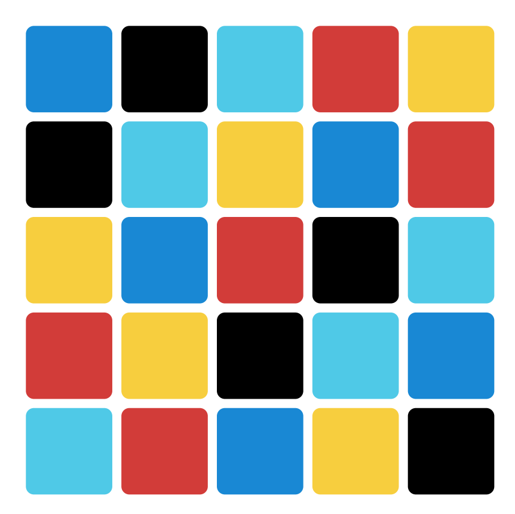
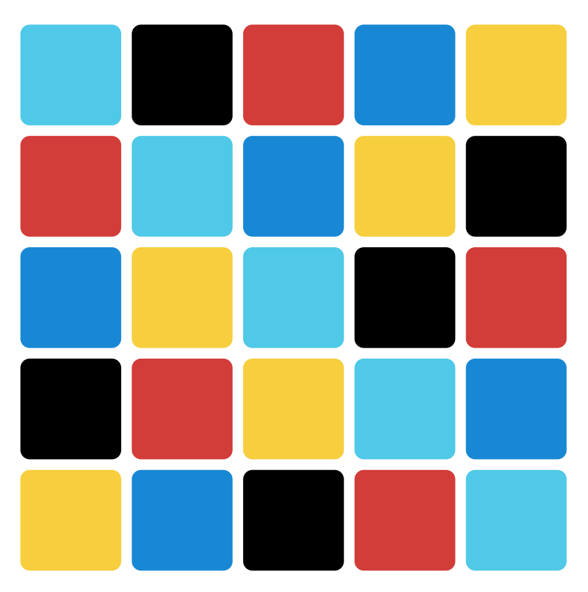

Azul is a great board game. But after awhile the standard layout of the "tile wall" can become predictable.
How about a random tile wall?
 Click here to create one!
Print it off, cut most of the paper away, and lay it over your game board (and even rotate it). Print several copies of the same on, or create several different boards and let people choose.
Here it is in action at SHUX 2018. Four of us used the same generated tile wall and each chose how we wanted to rotate it:

If you're interested in how this works, see this.
You can also leave comments on BGG.